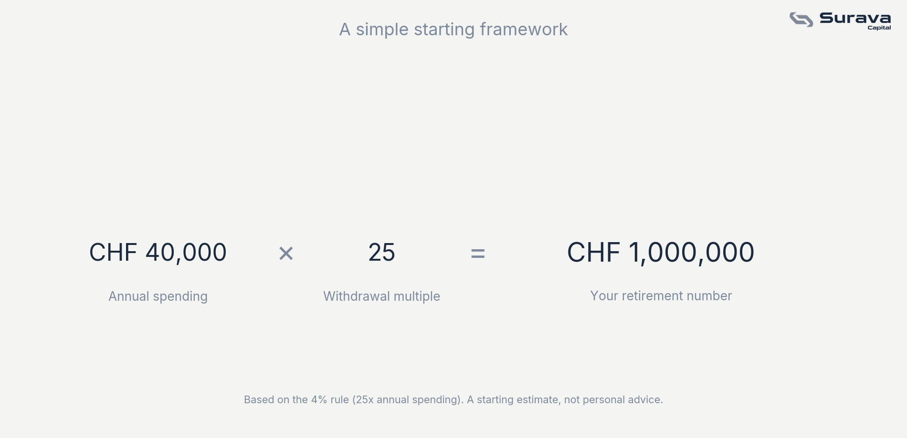

Start with spending, not a target
The common approach is to imagine some large lump sum and work backward into panic. A more grounded approach starts with a simpler question: how much would you need each year to cover your lifestyle in retirement? Once you know that number, the total savings target follows from a well-known rule.

Where the "25 times" figure comes from
This is a reverse-engineered version of the 4% rule, a widely cited retirement planning guideline suggesting that withdrawing about 4 percent of a portfolio in the first year of retirement, then adjusting for inflation each year after, has historically had a good chance of lasting 30 years without running out. If 4 percent of your portfolio should cover a year of spending, your portfolio needs to be about 25 times your annual spending.
Why this is a starting point, not a finish line
The 4% rule was built on historical US market data over specific time periods, and reasonable people disagree about whether it holds up under different market conditions, different countries, or longer retirements. It also says nothing about your specific situation: whether you'll receive AHV and Pillar 2 income alongside your own savings, which reduces how much your personal portfolio needs to cover in the first place.
Treat the 25x figure as a rough anchor for a conversation, not a precise target. Your actual number depends on your expected AHV and BVG income, your retirement age, how flexible your spending can be, and how long you expect to need the money for.
This article is for general educational and informational purposes only. It is not investment, tax, or legal advice, or an offer of any regulated financial service. Views expressed are those of Surava Capital.